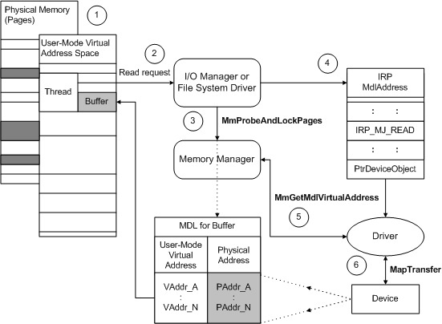
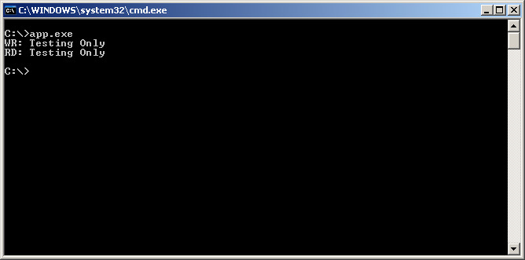
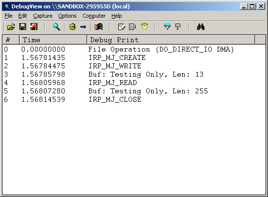

Windows Driver Model >> WDK 7.1 (C/C++) >> Advanced >> File Operation
DO_DIRECT_IO(DMA)用法
Github https://github.com/steward-fu/driver
DO_DIRECT_IO的作法就是操作Mapping Buffer的概念，I/O Manager會把User Buffer重新Mapping成一塊Driver可以操作的MDL記憶體，比較值得注意的是，如果有涉及到使用DMA的方式，則比須使用特殊的API取得記憶體指標(相較於PIO方式)，這樣的流程可以參考如下圖表說明(IRP_MJ_READ)：

記憶體指標：
| IRP | Buffer | Length |
|---|---|---|
| IRP_MJ_READ | (MDL) MmGetMdlVirtualAddress |
(MDL) MmGetMdlByteCount |
| IRP_MJ_WRITE | (MDL) MmGetMdlVirtualAddress |
(MDL) MmGetMdlByteCount |
main.c
#include <wdm.h>
#define DEV_NAME L"\\Device\\firstFile-Direct-DMA"
#define SYM_NAME L"\\DosDevices\\firstFile-Direct-DMA"
#define MSG "File Operation (DO_DIRECT_IO DMA)"
char szBuffer[255]={0};
PDEVICE_OBJECT gNextDevice=NULL;
NTSTATUS AddDevice(PDRIVER_OBJECT pOurDriver, PDEVICE_OBJECT pPhyDevice)
{
PDEVICE_OBJECT pOurDevice=NULL;
UNICODE_STRING usDeviceName;
UNICODE_STRING usSymboName;
DbgPrint(MSG);
RtlInitUnicodeString(&usDeviceName, DEV_NAME);
IoCreateDevice(pOurDriver, 0, &usDeviceName, FILE_DEVICE_UNKNOWN, 0, FALSE, &pOurDevice);
RtlInitUnicodeString(&usSymboName, SYM_NAME);
IoCreateSymbolicLink(&usSymboName, &usDeviceName);
gNextDevice = IoAttachDeviceToDeviceStack(pOurDevice, pPhyDevice);
pOurDevice->Flags&= ~DO_DEVICE_INITIALIZING;
pOurDevice->Flags|= DO_DIRECT_IO;
return STATUS_SUCCESS;
}
void Unload(PDRIVER_OBJECT pOurDriver)
{
}
NTSTATUS IrpPnp(PDEVICE_OBJECT pOurDevice, PIRP pIrp)
{
PIO_STACK_LOCATION psk = IoGetCurrentIrpStackLocation(pIrp);
UNICODE_STRING usSymboName;
if(psk->MinorFunction == IRP_MN_REMOVE_DEVICE){
RtlInitUnicodeString(&usSymboName, SYM_NAME);
IoDeleteSymbolicLink(&usSymboName);
IoDetachDevice(gNextDevice);
IoDeleteDevice(pOurDevice);
}
IoSkipCurrentIrpStackLocation(pIrp);
return IoCallDriver(gNextDevice, pIrp);
}
NTSTATUS IrpFile(PDEVICE_OBJECT pOurDevice, PIRP pIrp)
{
ULONG Len;
PUCHAR pBuf;
PIO_STACK_LOCATION psk = IoGetCurrentIrpStackLocation(pIrp);
switch(psk->MajorFunction){
case IRP_MJ_CREATE:
memset(szBuffer, 0, sizeof(szBuffer));
DbgPrint("IRP_MJ_CREATE\n");
break;
case IRP_MJ_READ:
pBuf = MmGetMdlVirtualAddress(pIrp->MdlAddress);
Len = MmGetMdlByteCount(pIrp->MdlAddress);
memcpy(pBuf, szBuffer, Len);
DbgPrint("IRP_MJ_READ\n");
DbgPrint("Buf: %s, Len: %d\n", szBuffer, Len);
break;
case IRP_MJ_WRITE:
pBuf = MmGetMdlVirtualAddress(pIrp->MdlAddress);
Len = MmGetMdlByteCount(pIrp->MdlAddress);
memcpy(szBuffer, pBuf, Len);
DbgPrint("IRP_MJ_WRITE\n");
DbgPrint("Buf: %s, Len: %d\n", szBuffer, Len);
break;
case IRP_MJ_CLOSE:
DbgPrint("IRP_MJ_CLOSE\n");
break;
}
IoCompleteRequest(pIrp, IO_NO_INCREMENT);
return STATUS_SUCCESS;
}
NTSTATUS DriverEntry(PDRIVER_OBJECT pOurDriver, PUNICODE_STRING pOurRegistry)
{
pOurDriver->MajorFunction[IRP_MJ_PNP] = IrpPnp;
pOurDriver->MajorFunction[IRP_MJ_CREATE] =
pOurDriver->MajorFunction[IRP_MJ_READ] =
pOurDriver->MajorFunction[IRP_MJ_WRITE] =
pOurDriver->MajorFunction[IRP_MJ_CLOSE] = IrpFile;
pOurDriver->DriverExtension->AddDevice = AddDevice;
pOurDriver->DriverUnload = Unload;
return STATUS_SUCCESS;
}
DriverEntry()設定檔案相關的Callback副程式。
IrpFile()收到IRP_MJ_WRITE時，Driver複製User Buffer的內容到Driver自己的Buffer(gszBuffer)，當收到IRP_MJ_READ時，將gszBuffer內容又複製到User Buffer，完成暫存的功能，注意此處指標取得的方式跟DO_BUFFERED_IO有所不同。
IrpPnp()只處理釋放資源的工作。
Unload()不做任何處理。
AddDevice()Create Device和Symbolic Link並且設定使用DO_DIRECT_IO的傳輸方式。
app.cpp
#define INITGUID
#include <windows.h>
#include <strsafe.h>
#include <setupapi.h>
#include <stdio.h>
#include <stdlib.h>
int __cdecl main(int argc, char* argv[])
{
HANDLE hFile = NULL;
DWORD dwRet = 0;
char pucBuffer[255]={0};
hFile = CreateFile("\\\\.\\firstFile-Direct-DMA", GENERIC_READ | GENERIC_WRITE, 0, NULL, OPEN_EXISTING, 0, NULL);
if (hFile == INVALID_HANDLE_VALUE) {
printf("failed to open driver\n");
return 1;
}
strncpy(pucBuffer, "Testing Only", sizeof(pucBuffer));
WriteFile(hFile, pucBuffer, strlen(pucBuffer) + 1, &dwRet, NULL);
printf("WR: %s\n", pucBuffer);
ReadFile(hFile, pucBuffer, sizeof(pucBuffer), &dwRet, NULL);
printf("RD: %s\n", pucBuffer);
CloseHandle(hFile);
return 0;
}
結果

